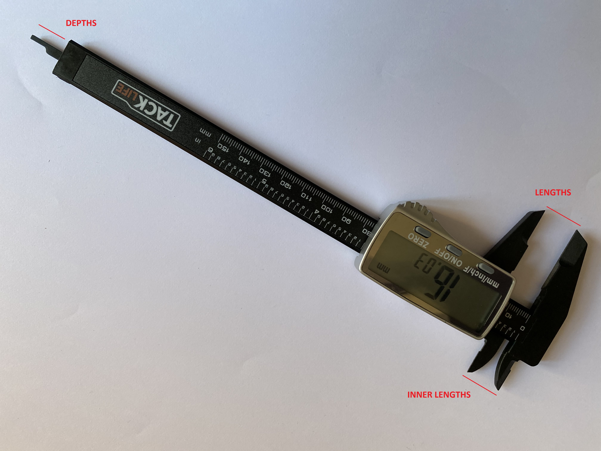
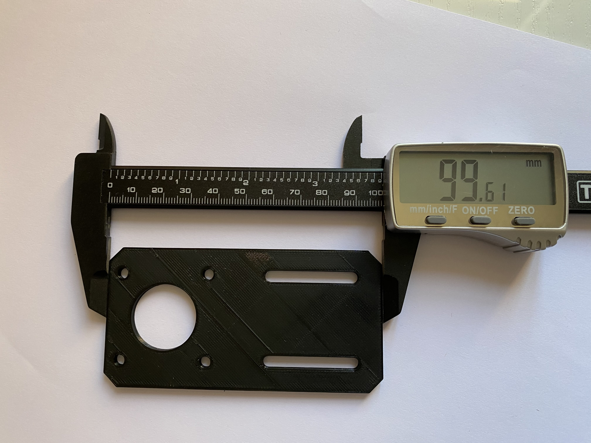
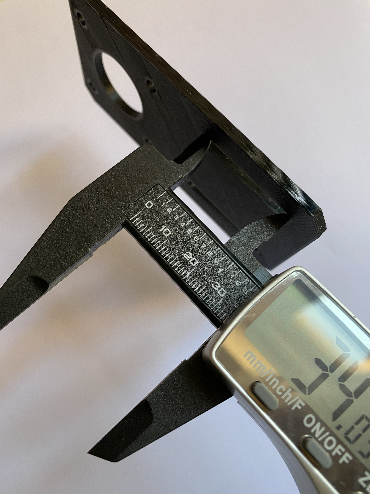
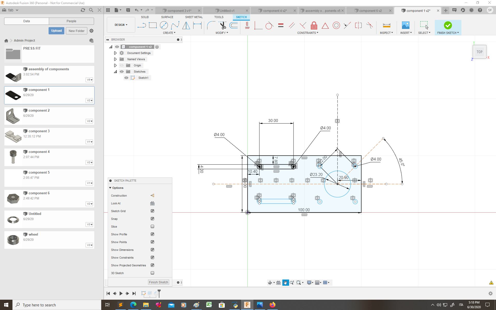

I have chosen to start by designing something simple as component 1 (infact this component can be designed by extruding one single sketch) and than try something more complex as a screw.
The caliber can be used to measure lengths, inner lenghts (such as the diameter of a circular hole) and depths.
Here are some examples of mesures I have taken with the caliber:
 
After I have taken all the measure of the components I wanted to design I created the sketches on fusion 360.
